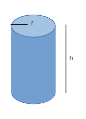

Finding a value which maximizes the volume, or surface area depending on what you want.
Typicaly you will be given a shape and it's volume or area. You will need to work out the missing equation.
Once you work out the equations, you will sub them in together to get rid of values which over complicate it (like height if it
is not relevant). We then want to work out maximum values, the key word here is max. We will want to differentiate and find the
max values.
Example:
1) A company makes bean cans and want to maximize its bean produce.
i)Given the Area is 50cm^2, show that the volume is: (50-2Pi*r^2)r/2 = V
We want to find the volume: h*Pi*r^2 = V
We also write out the Area equation: 50 = 2Pi*r^2 +2Pi*rh
We don't want h so make h the subject and sub it all into Volume
(50-2Pi*r^2)/(2Pi*r)=h
((50-2Pi*r^2)/(2Pi*r))*Pi*r^2 = V Which simplifies to: (50-2Pi*r^2)r/2 = V
Therefore QED
ii)Find a value for the radius where r is a maximum
We now ant to differentiate the Volume to get r.
(50-2Pi*r^2)r/2 = V --> dV/dr = 25-3Pir^2
At the stationar point the gradient is 0 so: 0 = 25-3Pir^2
r^2 = 25/3Pi --> r=1.62
To check this is a max we differentiate again to get d^V/dr^2 = -6Pir.
-6Pi(1.62)<0 therefore maximum value at r=1.62cm